4 体系结构介绍
1 整体结构及进程结构
C/S结构
PG是一个典型的C/S模型。
体系结构概览
体系结构＝实例＋存储结构
实例＝进程＋内存结构
Process and Memory Architecture
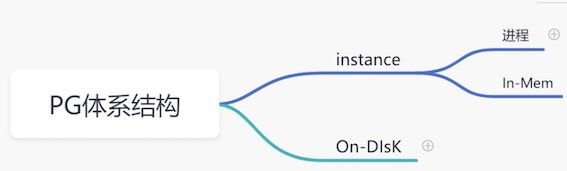
结构实例
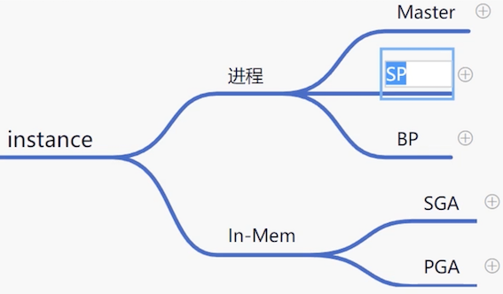
- Master process
- A postgres server process is a parent of all processes related to a database cluster management.
- Each backend process handles all queries and statements issued by a connected client.
- Various background processes perform processes of each feature (e.g., VACUUM and CHECKPOINT processes) for database management.
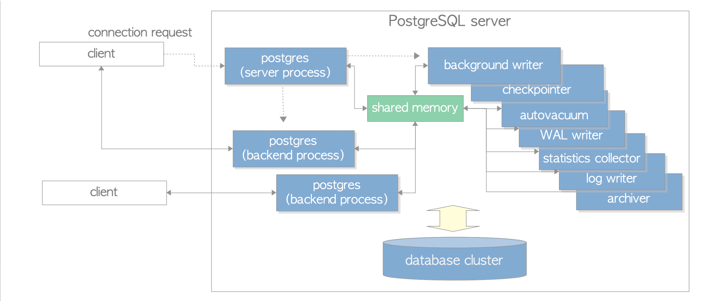
进程结构
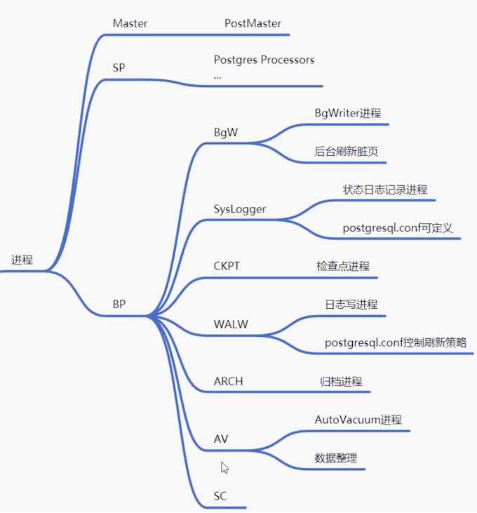
$ ps -ef | grep postgres
postgres 3094 26286 0 04:40 pts/0 00:00:00 ps -ef
postgres 3095 26286 0 04:40 pts/0 00:00:00 grep --color=auto postgres
root 26027 25478 0 Apr24 pts/0 00:00:00 su - postgres
postgres 26031 26027 0 Apr24 pts/0 00:00:00 -bash
root 26282 26031 0 Apr24 pts/0 00:00:00 su - postgres
postgres 26286 26282 0 Apr24 pts/0 00:00:00 -bash
postgres 26404 1 0 Apr24 ? 00:00:01 /usr/local/pg12/bin/postgres
postgres 26406 26404 0 Apr24 ? 00:00:00 postgres: checkpointer
postgres 26407 26404 0 Apr24 ? 00:00:02 postgres: background writer
postgres 26408 26404 0 Apr24 ? 00:00:02 postgres: walwriter
postgres 26409 26404 0 Apr24 ? 00:00:02 postgres: autovacuum launcher
postgres 26410 26404 0 Apr24 ? 00:00:03 postgres: stats collector
postgres 26411 26404 0 Apr24 ? 00:00:00 postgres: logical replication launcher
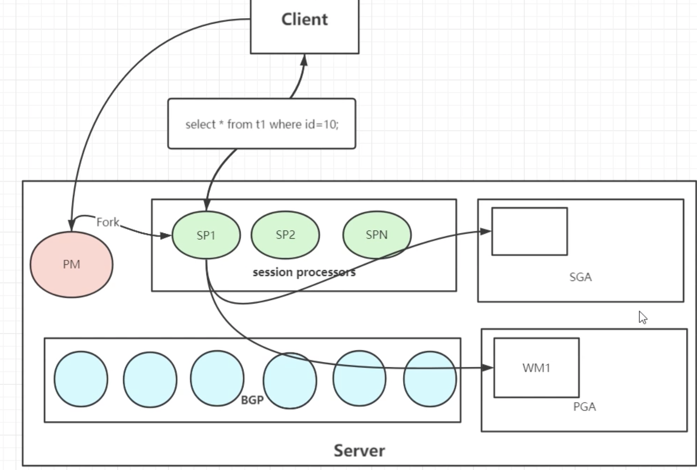
- PM 进程
PostMaster进程，提供监听、连接协议、验证功能，fork其他进程。监听哪个IP是受到postgressql.conf影响的。默认提供socket和TCP/IP方式连接。
验证功能，通过pg_hba.conf和用户验证模块来提供。
- SP进程
Session Processors，会话进程。用户一旦验证成功就会fork一个新的进程。
- BGW进程
background writer 进程。主要负责后台刷新脏页。
- Sysloger进程
主要负责数据库状态的信息日志记录。
- CKPT
检查点进程
- WALW
walwriter进程．WAL (Redo)日志刷写进程。
- ARCH
WAL日志的归档日志。
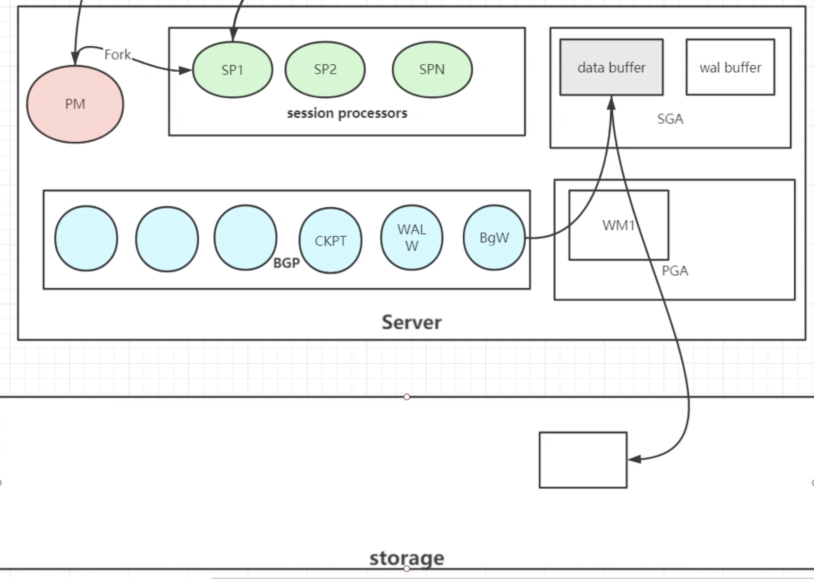
- WM: worker Memory
内存结构
Architecture and Tuning of Memory in PostgreSQL Databases
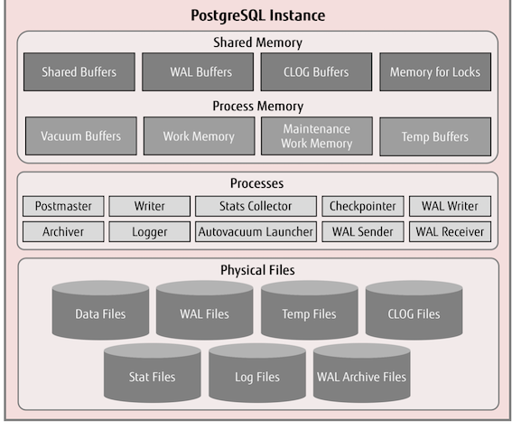
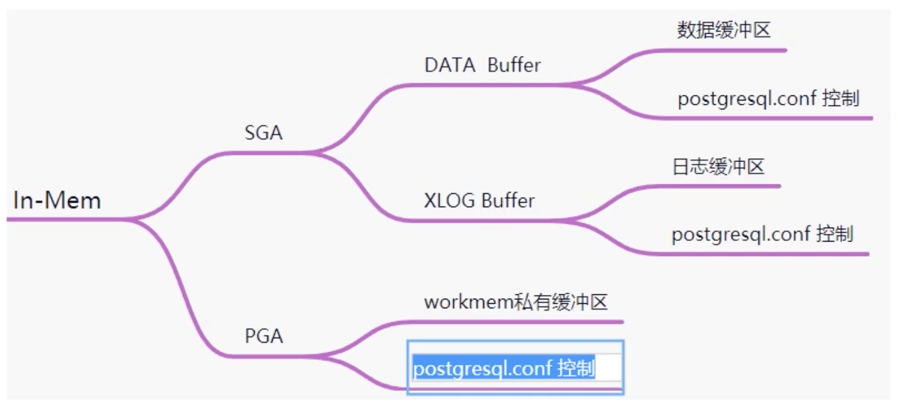
Memory in PostgreSQL can be classified into two categories:
- Local Memory area: It is allocated by each backend process for its own use.
-
Shared memory area: It is used by all processes of a PostgreSQL server.
-
Shared buffer pool
- XLOG: WAL(Write HEAD Log) buffer - PostgreSQL loads pages within tables and indexes from persistent storage to a shared buffer pool, and then operates on them directly.
cat /pgdata/12/data/postgresql.conf
# - Memory -
shared_buffers = 128MB # min 128kB
# (change requires restart)
# Caution: it is not advisable to set max_prepared_transactions nonzero unless
# you actively intend to use prepared transactions.
#work_mem = 4MB # min 64kB
#maintenance_work_mem = 64MB # min 1MB
存储结构
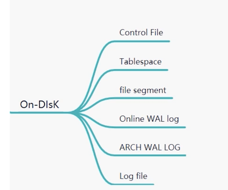
2 重点文件介绍
2.1 日志文件种类
$PGDATA/log运行日志(pg10之前为$PGDATA/pg_log)$PGDATA/pg_wal重做日志（pg10之前为$PGDATA/pg_xlog)$PGDATA/pg_xact事务提交日志（pg10之前为$PGDATA/pg_clog)- 服务器日志，可以在启动的时指定，比如
pg_ctl start -l ./alert.log
2.2 运行日志参数
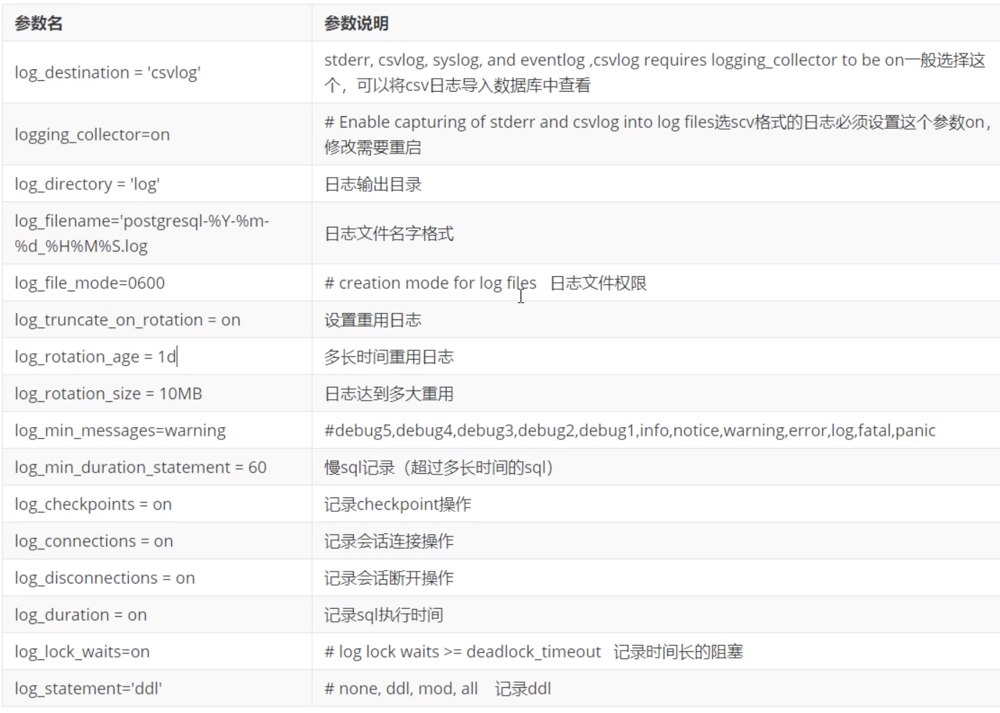
2.3 CSV日志入库存储
CREATE TABLE pg_log (
log_time timestamp(3) with time zone,
user_name text,
database_name text,
process_id integer,
connection_from text,
session_id text,
session_line_num bigint,
command_tag text,
session_start_time timestamp with time zone,
virtual_transaction_id text,
transaction_id bigint,
error_severity text,
sql_state_code text,
message text,
detail text,
hint text,
internal_query text,
internal_query_pos integer,
context text,
query text,
query_pos integer,
location text,
application_name text,
PRIMARY KEY (session_id, session_line_num)
);
# copy pg_log from '$PGLOG/postgresql-16.csv' with csv;
COPY 3
# - Where to Log -
log_destination = 'csvlog' # Valid values are combinations of
# stderr, csvlog, syslog, and eventlog,
# depending on platform. csvlog
# requires logging_collector to be on.
# This is used when logging to stderr:
logging_collector = on # Enable capturing of stderr and csvlog
# into log files. Required to be on for
# csvlogs.
# (change requires restart)
# These are only used if logging_collector is on:
log_directory = 'log' # directory where log files are written,
# can be absolute or relative to PGDATA
log_filename = 'postgresql-%Y-%m-%d_%H%M%S.log' # log file name pattern,
# can include strftime() escapes
log_file_mode = 0600 # creation mode for log files,
# begin with 0 to use octal notation
log_truncate_on_rotation = on # If on, an existing log file with the
# same name as the new log file will be
# truncated rather than appended to.
# But such truncation only occurs on
# time-driven rotation, not on restarts
# or size-driven rotation. Default is
# off, meaning append to existing files
# in all cases.
log_rotation_age = 1d # Automatic rotation of logfiles will
# happen after that time. 0 disables.
log_rotation_size = 100MB # Automatic rotation of logfiles will
# happen after that much log output.
[postgres@jabox data]$ pg_ctl restart -mf
waiting for server to shut down....2022-04-25 14:46:01.274 UTC [26404] LOG: received fast shutdown request
2022-04-25 14:46:01.275 UTC [26404] LOG: aborting any active transactions
2022-04-25 14:46:01.284 UTC [26404] LOG: background worker "logical replication launcher" (PID 26411) exited with exit code 1
2022-04-25 14:46:01.284 UTC [26406] LOG: shutting down
2022-04-25 14:46:01.293 UTC [26404] LOG: database system is shut down
done
server stopped
waiting for server to start....2022-04-25 14:46:01.388 UTC [5186] LOG: starting PostgreSQL 12.6 on x86_64-pc-linux-gnu, compiled by gcc (GCC) 4.8.5 20150623 (Red Hat 4.8.5-44), 64-bit
2022-04-25 14:46:01.389 UTC [5186] LOG: listening on IPv4 address "0.0.0.0", port 1921
2022-04-25 14:46:01.391 UTC [5186] LOG: listening on Unix socket "/tmp/.s.PGSQL.1921"
2022-04-25 14:46:01.408 UTC [5186] LOG: redirecting log output to logging collector process
2022-04-25 14:46:01.408 UTC [5186] HINT: Future log output will appear in directory "log".
done # 0 disables.
$ pwd
/pgdata/12/data/log
-rw-------. 1 postgres postgres 499 Apr 25 14:46 postgresql-2022-04-25_144601.csv
-rw-------. 1 postgres postgres 166 Apr 25 14:46 postgresql-2022-04-25_144601.log
-rw-------. 1 postgres postgres 0 Apr 26 00:00 postgresql-2022-04-26_000000.csv
-rw-------. 1 postgres postgres 0 Apr 26 00:00 postgresql-2022-04-26_000000.log
2.4 postgresql.conf
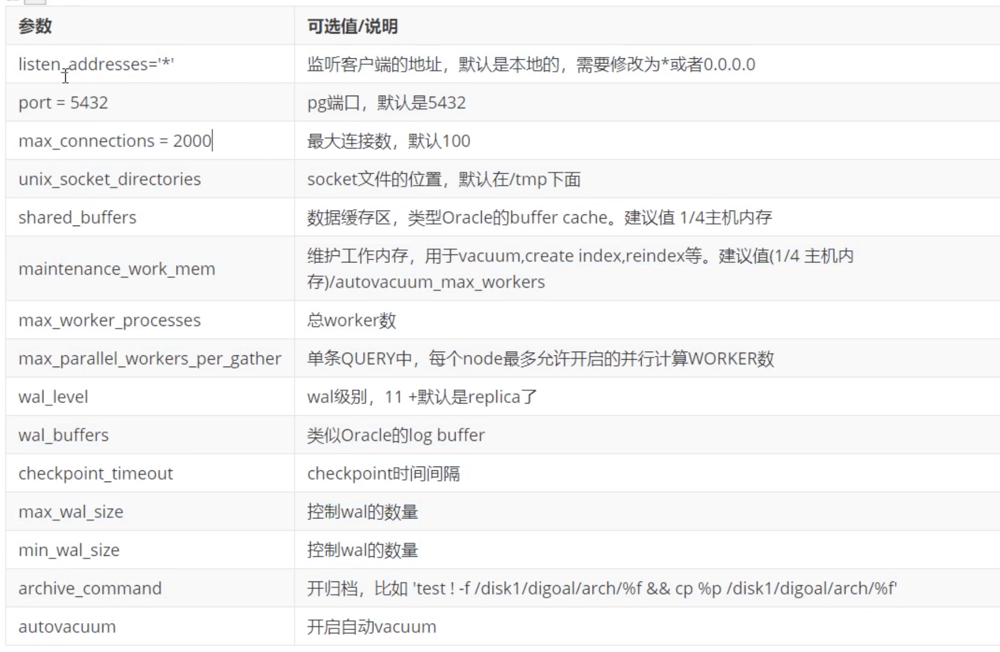
2.5 pg_hba.conf
2.6 pg_ident.conf
pg_ident.conf是用户映射配置文件。结合pg_ident.conf中，method为ident可以用特定的操作系统用户和指定的数据库用户登录数据库。如下：pg_ident.conf如下：
# MAPNAME SYSTEM-USERNAME PG-USERNAME
mapll test sa
pg_hba.conf
# TYPE DATABASE USER CIDR-ADDRESS METHOD
local all all ident map=mapll
2.7 控制文件
pg_controldata可以查看控制文件的内容
$ pg_controldata $PGDATA
pg_control version number: 1201
Catalog version number: 201909212
Database system identifier: 7090014790075388876 #dbid
Database cluster state: in production # primary
pg_control last modified: Mon 25 Apr 2022 02:51:01 PM UTC
Latest checkpoint location: 0/16547F0
Latest checkpoint's REDO location: 0/16547B8 # redo 位置
Latest checkpoint's REDO WAL file: 000000010000000000000001
Latest checkpoint's TimeLineID: 1
Latest checkpoint's PrevTimeLineID: 1
Latest checkpoint's full_page_writes: on
Latest checkpoint's NextXID: 0:501 #下一个事务ID
Latest checkpoint's NextOID: 16396 #下一个OID
Latest checkpoint's NextMultiXactId: 1
Latest checkpoint's NextMultiOffset: 0
Latest checkpoint's oldestXID: 480
Latest checkpoint's oldestXID's DB: 1
Latest checkpoint's oldestActiveXID: 501
Latest checkpoint's oldestMultiXid: 1
Latest checkpoint's oldestMulti's DB: 1
Latest checkpoint's oldestCommitTsXid:0
Latest checkpoint's newestCommitTsXid:0
Time of latest checkpoint: Mon 25 Apr 2022 02:51:01 PM UTC
Fake LSN counter for unlogged rels: 0/3E8
Minimum recovery ending location: 0/0
Min recovery ending loc's timeline: 0
Backup start location: 0/0
Backup end location: 0/0
End-of-backup record required: no
wal_level setting: replica # wal级别
wal_log_hints setting: off
max_connections setting: 100 #最大连接数
max_worker_processes setting: 8
max_wal_senders setting: 10
max_prepared_xacts setting: 0
max_locks_per_xact setting: 64
track_commit_timestamp setting: off
Maximum data alignment: 8
Database block size: 8192 # wal数据块大小
Blocks per segment of large relation: 131072 # 单个wal大小
WAL block size: 8192
Bytes per WAL segment: 16777216
Maximum length of identifiers: 64
Maximum columns in an index: 32
Maximum size of a TOAST chunk: 1996
Size of a large-object chunk: 2048
Date/time type storage: 64-bit integers
Float4 argument passing: by value
Float8 argument passing: by value
Data page checksum version: 0
Mock authentication nonce: 275b911fecb018c400d191d95acff4b55984ebca021220fbf2ab4f9f994bf67c
2.8 数据文件
pg中，每个索引和表都是一个单独的文件，pg中叫做page.默认是每个大于1G的page会被分割
pg_class.relfilenode.1这样的文件。page的大小在initdb的时候指定（--with-seg size)。
page物理位置
page的物理位置在
＄PGDATA/BASE/DATABASE_OID/PG_CLASS.RELFILENODE
$ psql
psql (12.6)
Type "help" for help.
postgres-# \c pg1
You are now connected to database "pg1" as user "postgres".
pg1-# \dt
List of relations
Schema | Name | Type | Owner
--------+------+-------+----------
public | t1 | table | postgres
(1 row)
pg1=# select relfilenode from pg_class where relname='t1';
relfilenode
-------------
16385
(1 row)
pg1=# select pg_relation_filepath('t1');
pg_relation_filepath
----------------------
base/16384/16385
(1 row)
pg1=# select relfilenode from pg_class where relname='t1';
relfilenode
-------------
16385
(1 row)
pg1=# select pg_relation_filepath('t1');
pg_relation_filepath
----------------------
base/16384/16385
(1 row)
pg1=# show data_directory;
data_directory
-----------------
/pgdata/12/data
(1 row)
pg1=# \q
[data]$ pwd
/pgdata/12/data
[postgres@jabox data]$ ls -ltr base/16384/16385
-rw-------. 1 postgres postgres 8192 Apr 24 04:05 base/16384/16385
需要注意的是，pg_class.relfilenode类似dba_objects.data_object_id, truncate表之后relfilenode会变。对应的物理文件名字也会变。